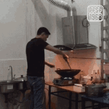
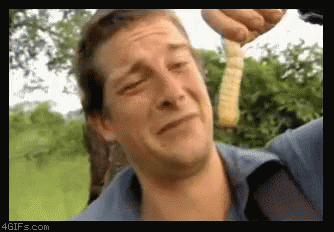

Microwaving Bacon - Bear Grylls Style

Headsup:
This recipe can be changed in many ways: you can omit the pecans, double the bacon, add peanuts, etc. Just keep in mind that if you add these ingredients, the microwave will cook these as well, so add peanuts near the beginning, extra bacon and/or pecans near the end. Be ready when you open the microwave to fight a group of nasty outgrown and overcooked nuts - you are the Bear Grylls in your kitchen and you have to survive them. Improvise Adapt Overcome.
Nutrition / Serving:
338 calories; protein 5.4g; carbohydrates 55.8g; fat 11.7g; cholesterol 13.6mg; sodium 642.4mg; and be brave about going to war with the bacon because “Life is an adventure that is best lived boldly” - Bear Grylls
Ingredients:
- ½ pound bacon
- 1 cup white sugar
- ½ cup light corn syrup
- 1 pinch salt
- ½ cup chopped pecans
- 1 tablespoon bacon grease
- 1 teaspoon vanilla extract
- 1 ½ teaspoons baking soda
- 200% of your will power because now we are in the wild battling snakes and scorpions
Steps:
- Cook bacon in a large skillet over medium-high heat, turning occasionally, until crisp and browned, about 10 minutes. Drain the bacon slices on paper towels and reserve 1 tablespoon bacon grease. Crumble bacon once drained and slightly cooled. Last I crumbled was after watching the GOT ending.
- Combine sugar, syrup, and salt in a large microwave-safe bowl. Heat in microwave oven until bubbling, about 4 minutes. Bottomline, normal bowl would turn into salami if microwaved, and to reiterate we are cooking bacon not salami.
- Stir bacon, pecans, reserved bacon grease, and vanilla extract through the sugar mixture; heat in microwave oven for 3 minutes more. Immediately add baking soda and stir just until foamy. Add in a bit more baking soda to create blue foam. Nah just kidding, don't do that, seriously.
- Working quickly, spread the mixture onto the prepared baking sheet. Let cool until set, about 15 minutes. Break into bite-size pieces. Or byte sized or int sized or long int sized.

Congratulations! Bear Grylls would be proud of you
